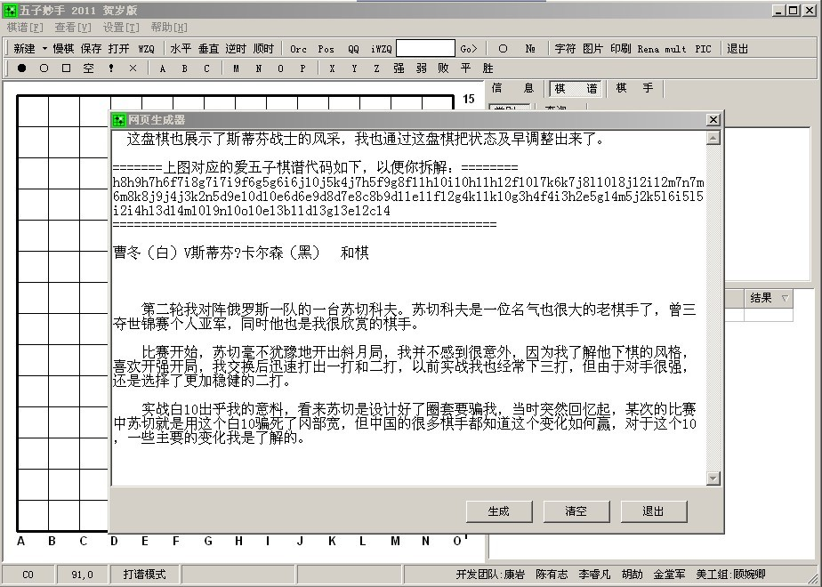
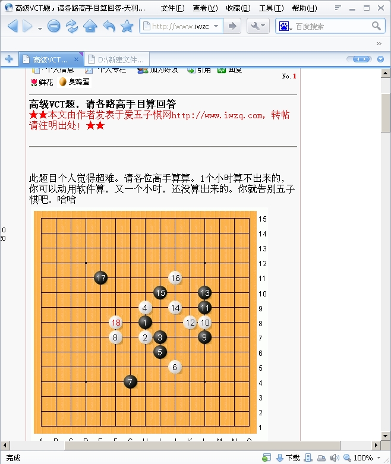
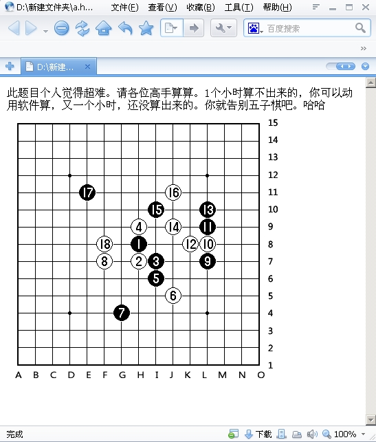
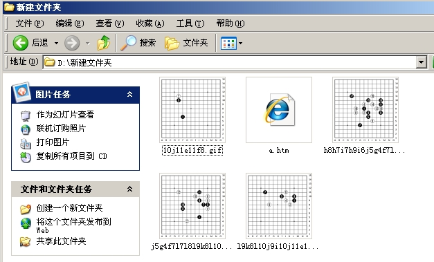

五子妙手V2011贺岁版发布！----把爱五子棋变成书不是梦想
#1 五子妙手V2011贺岁版发布！----把爱五子棋变成书不是梦想 作者：小丸.net 发表时间：2011-1-30 2:07:32
************************************************************************
软件名称：五子妙手 互动棋谱管理软件
软件版本：V2011 贺岁版
软件作者：康岩[小丸.net]
软件类型：免费软件(永久免费)
************************************************************************
软件简介：五子妙手是五子棋爱好者不可少的研习打谱软件，他强大的研谱、棋谱管理功能可以为您在学习五子棋时起来事半功倍的作用。
二楼、五楼问题已解决：点击下载
开发历史：
V2011 贺岁版
1.完善升级功能
2.增加了一个HTML生成器，可以把爱五子棋文档直接生成HTML粘贴到WORD中,粘贴到WORD中的图片在打印时放大缩小均不失真,把爱五子棋网站的文章打印成书已经不是梦想！
3.增加交手记录查询，可以查询任意两个棋手的交手记录。
4.增加了一些棋谱。
5.修改了国内五子棋Type版等级分(更新至2010-10-6)，并修正了一些棋手信息。

V2010 正式版
备注：2010版采用了新版数据库，请在更新前导出您自己的棋谱。
1.去掉了皮肤功能,去掉了新闻中心功能，使系统运行更快
2.重新整所有棋谱(计 1397谱)
3.增加了棋手信息，包括所属地区，所属俱乐部，等级分，棋谱数，胜率等。
4.查询棋谱更方便(根据棋手查询<以棋手的名字,网名,QQ网名,IWZQ注册ID,常用绰号,常用封号以及以上各类信息的拼音查询>,根据棋谱同型查询)
5.修正了读取ORC棋谱没有和棋的BUG
6.新版的妙手软件更小，易于携带
7.2010版数据更新程序测试版发布
V2009 beta
1.重新整理了所有的棋谱
2.增加了新闻中心，能够让您快速的浏览与五子棋有关的新闻
3.重写了所有的帮助文档
4.修改版本显示方式
5.对界面与菜单作了一些调整
6.修正了修改棋盘路数时棋星位置显示错误的BUG
V3.5 正式版
1.修改了一些小BUG
2.新增自动播放功能.可以自动播放盘面上的棋谱
3.修改成了集成环境,增强棋谱的管理
V3.0 Beta III B0601 全团赛修改版
1.修正了软件在Vista下不能打开的BUG
2.增加13路，9路棋盘功能，兼容围棋打谱软件数据。
3.对打开SGF,ORC谱的功能增强,可以打开他们的详细信息并可以实时保存,并修改其中可能导致的系统死机的BUG
V3.0 Beta III
1.软件增加支持17*17路,19*19路棋盘
2.可以保存窗体的位置，大小，启动后自运设为上次运行的大小
3.在主界面上可以快捷打开棋谱
4.修改字体，让字体更好看
V3.0 beta II 贺岁版
1.修正了保存谱时一些操作上的问题
2.修正了一些显示的问题
3.增加了与博客系统相对应的棋谱代码生成器
4.修正了打开字符串棋谱不能检测错误的功能
V3.0正式版新功能
1.增加了输出带详细资料的SGF（ORC）谱的功能。
2.增加了批量导入多种谱的功能
3.增加了批量导出POS,SGF谱的功能。
4.增强了棋谱类别管理的功能
5.在摆棋模式下可以像RENLIB那个按下CTRL键在盘面上输入字符的功能
6.增加了自定义显示数字与显示数字序号的功能
7.修正了棋谱的各项重要参数。
8.增加了导出图片添加水印的效果。水印的透明度、图片可以自由选择
V3.0预览版
1.去除了冗余的ORC阅读功能，本站将开发专业的ORC阅读操作工具
2.去除了冗余的棋谱分析功能，该功能在网站提供
3.美化了界面，软件界面特邀上海知名女棋手顾婉卿四段制作;
4.支持打开IWZQ棋谱
5.兼容了iWZQ网站的棋谱
V2.5 正式版 新增功能
1.软件改名为：五子妙手 更新的新图标，更改了新界面
2.兼容iWZQ网站的风格界面
3.修改了不能打开网站打包棋谱的bug
4.增加手动阅读教室功能
5.棋盘可以无限缩放任何大小
6.支持导出POS,SGF格式文件
v2.5 BETA 1新增功能：
１．增加导出文字棋盘
２．增加棋盘旋转功能
３．修改了一些小错误
４．增加生成iWZQ代码
V2.1正式版
1、增强棋谱管理功能，用目录树结构替代现在的列表结构。
2、棋谱提供备份，载入功能；
３、支持打开边烽、联众棋谱
４、支持保存系统所有设置
v2.0 beta1
１、调整了界面
２、增加导出图形文字棋谱的功能
３、重新修改导出rena谱，使软件通用化
４、棋谱增加删除功能
５、增加了几个漂亮的皮肤
V2.0
１、代码全部重写、界面更美观
２、增加打开ORC游戏棋谱、并支持多文件打开
３、互动棋谱支持更新
４、随心所欲改变棋盘，棋子、坐标颜色，以
#2 Re:五子妙手V2011贺岁版发布！----把爱五子棋变成书不是梦想 作者：有志青年 发表时间：2011-1-30 9:34:11
HTML网页生成器，功能很好，非常好。
缺点，默认图片都在C盘根目录下，乱！
建议，默认图片保存到我的文档的图片文件夹下！
［ 失落刀 于 2011-1-30 10:25:18 时花20金币送鲜花一朵］
#3 Re:五子妙手V2011贺岁版发布！----把爱五子棋变成书不是梦想 作者：梧桐风 发表时间：2011-1-30 11:23:18
 NICE JOB !!!!
NICE JOB !!!!
#4 Re:五子妙手V2011贺岁版发布！----把爱五子棋变成书不是梦想 作者：踵酃 发表时间：2011-1-30 13:17:02
个人非常喜欢这款软件，上次的2010版本，我无法使用，我看看能用否．
－－－已经查过，速度非常快，一点即出，非常感谢，很值得收藏 自从２０１０年版本无法使用之后，都觉得可惜，今天终于看到新版本出现了
自从２０１０年版本无法使用之后，都觉得可惜，今天终于看到新版本出现了
［此帖子已被 踵酃 在 2011-1-30 13:31:23 编辑过］
#5 Re:五子妙手V2011贺岁版发布！----把爱五子棋变成书不是梦想 作者：有志青年 发表时间：2011-1-30 21:34:37
二楼问题已经解决，各位可以正常使用了，小康这次的这个功能要狠狠的表扬。
还有一些不影响使用的新问题：
先来看一下效果，这是我随便找的一个帖子的截图，原帖地址ShowPost.asp?ThreadID=5221

我们来看一下转换后的效果

看着很舒服，将这个页面的内容直接复制、粘贴到word中，再保存就是word文档了。
小康，看一下下面的图片，问题：

程序需要优化，对吧。
［此帖子已被 有志青年 在 2011-1-30 21:35:35 编辑过］
#6 Re:五子妙手V2011贺岁版发布！----把爱五子棋变成书不是梦想 作者：小丸.net 发表时间：2011-1-31 2:35:52
确实发现了一个很严重很严重的问题，但具体的根源在那里，我现在也不太清，刚才又把程序重新理了一个，把文件名改成11位的数字，居然问题解决了！百思不解（回头问一下水月）
#7 Re:五子妙手V2011贺岁版发布！----把爱五子棋变成书不是梦想 作者：gerbo 发表时间：2011-1-31 16:00:51
小丸大哥。能否把爱五子棋网的棋谱打包就到此牛软中啊？能否自己设置棋盘大小啊，我还想要19 X 19 大小的。不管能否，这款牛款真牛。强烈收藏了！~~~
#8 Re:五子妙手V2011贺岁版发布！----把爱五子棋变成书不是梦想 作者：小丸.net 发表时间：2011-2-6 20:54:17
楼上的，19X19的棋盘软件中有这个功能。至于怎么打包爱五子棋的棋谱到我们的软件，以前软件有相关的说明，您可以去找一下。无非就是打包爱五子棋的谱，然后用五子妙手批量打开ORC谱的功能去导入。#9 Re:五子妙手V2011贺岁版发布！----把爱五子棋变成书不是梦想 作者：夜冷彩殇 发表时间：2011-2-7 20:28:28
做的相对不错
五子棋需要这样的朋友来支持
喜欢
#10 Re:五子妙手V2011贺岁版发布！----把爱五子棋变成书不是梦想 作者：天涯追疯 发表时间：2011-3-12 13:36:03
请问看谱的时候怎么没有前进，后退的按钮啊#11 Re:五子妙手V2011贺岁版发布！----把爱五子棋变成书不是梦想 作者：洪城骄子 发表时间：2011-5-12 12:55:46
是永久免费啊！太感动了，谢谢。#12 Re:五子妙手V2011贺岁版发布！----把爱五子棋变成书不是梦想 作者：岑小鱼 发表时间：2011-6-11 23:16:34
这个软件最新情况是怎么样子了?#13 Re:五子妙手V2011贺岁版发布！----把爱五子棋变成书不是梦想 作者：高飞 发表时间：2011-6-13 17:01:34
貌似没有更新呀，里面貌似我还只3段~~~
#14 Re:五子妙手V2011贺岁版发布！----把爱五子棋变成书不是梦想 作者：踵酃 发表时间：2011-6-13 21:07:00
 3段够了，已达到标准要求
3段够了，已达到标准要求
#15 Re:五子妙手V2011贺岁版发布！----把爱五子棋变成书不是梦想 作者：dyccj 发表时间：2011-6-15 19:03:36
怎么打开LIB棋谱？#16 Re:五子妙手V2011贺岁版发布！----把爱五子棋变成书不是梦想 作者：简枫残雪 发表时间：2011-7-24 13:53:51
nice~~~#17 Re:五子妙手V2011贺岁版发布！----把爱五子棋变成书不是梦想 作者：佛心诚 发表时间：2011-9-15 23:49:09
好东西啊，里边还有大量的棋谱